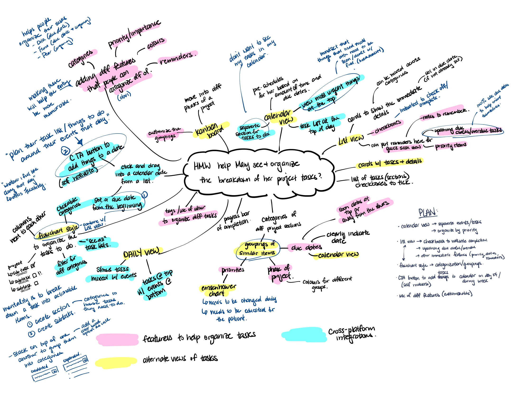
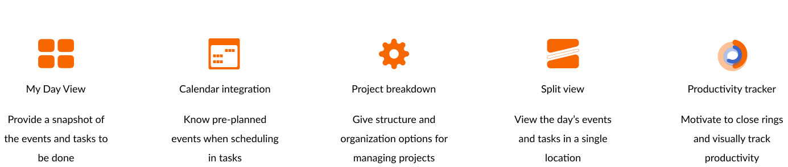

Apple’s native Calendar app was pre-installed in the 40.8 million iPhones sold in the 3rd quarater of 2019. For many users, this is often the main app they use so their information is connected across their Apple devices.
Currently, the Calendar and Reminders app are two separate applications on the iOS system.
Despite having different task flows, they ultimately share the same goal: reminding the user of an
upcoming item.
Can the Calendar and Reminders apps be combined for easier user convenience?
Design Solution
It became apparent that there was a real need for task management integration in the Calendar application. The new features motivate people to stay on top of their schedule in an organized and structured format.
My Day Tab
At a quick glance, instantly know where you are in your day with the chunked schedule view, and what you need to do in the tasks view. The productivity tracker helps motivate people to complete their tasks and close their rings.
Project management made easy
Hate the days where you’re stressed and overbooked? When choosing a due date for a task, this feature conveniently shows the pre-scheduled events so people know if their schedule needs to be changed to avoid burnout.
Single view of your day
It can get frustrating to switch between applications to schedule your day. This single calendar view shows your calendar and scheduled tasks in one place so people know what needs to get done. The task drawer is conveniently collapsible if people need a full calendar view.
I looked to other popular applications that people used or mentioned in the interviews. By doing a feature comparison and analysis of their task flows, I got a general idea of how people expected the application to be laid out.
Brainstorming
How to reinvent the wheel
Adding a new feature to the calendar application meant really pushing the boundaries of Apple's current designs. I spent several sessions brainstorming ideas from the research findings, with the first session not worrying about feasibility.

How might we help Manager Mary see and organize the breakdown of her project tasks?How might we make Deadline Dan more aware of his upcoming due dates?
How might we make entering tasks on an application more meaningful and memorable?How might we reduce the risk of distractions on the flow from phone to application?
Final features
Following IDEO's guidelines, subsequent sessions were spent finding common themes amongst the ideas and further conceptualizing. The final features I decided on were:

Wireframes
Finding what fits within Apple's design system
To find a layout and design that would best fit within Apple's existing design system, I created a series of low-fidelity sketches.
Staying true to the brand
Since I was adding a feature to Apple's native application, it was important that I kept the visual designs consistent. Using their material design kitI created the following wireframes and a Figma prototype to receive feedback from potential users. I opted to use their signature shade of blue as the highlight color throughout. Given that the nature of the app could easily cause stress or anxiety if viewing a busy day, I hoped that the blue would provide feelings of ease and calmness.
Usability Testing
Testing design flows
With the personas' goals in mind, the usability testing focused assessing the new functionalities:
providing a one-stop-shop experience for people to plan their schedule
offering a basic structure for people with different management methods
motivating users to stay on track with their day
Participants: five Age group: 24-35 years old Method: remote task-based interviews Measuring success:
- min. 70% of users can complete the task
- less than 70% of users are confused
- overall positive feelings towards the design
I asked concept usability questions to collect initial reactions to the My Day and improved calendar features. I followed this with task-based questions to assess the flow for creating and editing lists and tasks.
Before starting, I asked each participant to rate their level of experience with using task management applications on a scale of 1 to 3, with 3 being "expert". Participants who rated themselves 1 (no experience at all) were able to complete all the tasks, but were confused at the relevance of certain features such as sections or tags.
This reinforced the need for a clear onboarding process for new users to know what functionalities are available to them.
It also led me to re-examine whether some features were actually necessary for the final product.
Affinity Map
I categorized the user feedback from the interviews and organized them based on the features that were tested. This helped me visually see where the most common mistakes were, and therefore what were high priority changes.
Iterations
Improving with user feedback
Apple's accessibility problem
When I was following Apple's fitness application UI, I noticed that the brighter colors chosen were not accessible against their classic white background. This served to be a problem when looking at their Health application, where the activity text was not accessible.
Given the scope of the project, I decided to follow their current UI so the feature looked like it would belong within the application. However, it should be noted that the colors may need to be iterated in the future to be accessible to all potential users.
Final Prototype
In addition to the above, I made further iterations to the prototype. Play with the final prototype below!
Learnings
Creativity isn't linear
Initially, it was hard to come up with a novel solution and not just recreate what was already on the market. The brainstorming sessions helped me because it showed that the best ideas are never just "one idea". By thinking of many different ideas, I was able to piece together different elements of each and "frankenstein" a novel solution.
Always double check (even at big companies)
All designers are human, and this is something I may have forgotten as I often look up to current designers as role models. This project reminded me of this fact, and taught me to never just blindly follow a company's visual UI. Remembering design principles and double checking my work is how I discovered the accessibility issue. I hope to one day be a part of making that company improvement!